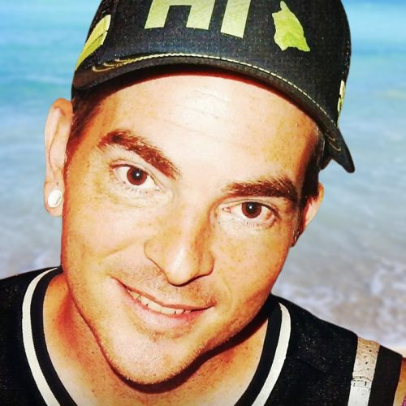

{% include google_analytics.ssi %}
E komo mai
John Maurer
M.A., University of Colorado at Boulder
B.A., Stanford University
Email: {% include email.ssi %}E komo mai! (Welcome!) As a data guru and mapster at the Pacific Islands Ocean Observing System (PacIOOS), I create and configure websites and services that provide scientific oceanographic data from a wide variety of sources, including satellite remote sensing, forecast models, and in situ observations (buoys, moorings, gliders, etc.) primarily for the region surrounding Hawaiʻi, but also for other islands across the insular Pacific. Given my background in geography and my experience with geographic information systems (GIS) and programming, I also build online mapping tools and do dynamic data viz. I enjoy making complex scientific geospatial information easier to access, use, and understand, and strive to bridge the gap between science and the general public.
Having once managed data measuring our planet's melting cryosphere at the National Snow and Ice Data Center (NSIDC), I'm now on the receiving end of all that melt water with data products and forecasts showing the rise in global sea levels that threaten tropical coastlines and low-lying islands. From a geospatial point-of-view, I escaped the quirks of polar map projections in remote Arctic and Antarctic regions only to make neighbors with the International Date Line, where what day it is can get confusing and you need to avoid the ill effects of "wrap-around" at the artificial boundary known as the Antimerdian. Is it located at ±180° or 0°/360°? Depends entirely on what you're trying (not) to do!
On a personal note, I'm originally from St. Louis (near historic Route 66), studied music at Stanford University, am an avid jazz and blues fan, love watching soccer (the OG "football") and tennis (vamos!) and learning languages (yay, Duolingo), and live in Honolulu on the island of Oʻahu with my wife Kasey Barton and our two kids, liberally coated in sunscreen and generally enjoying the views and holoholo time whenever can. Aloha!